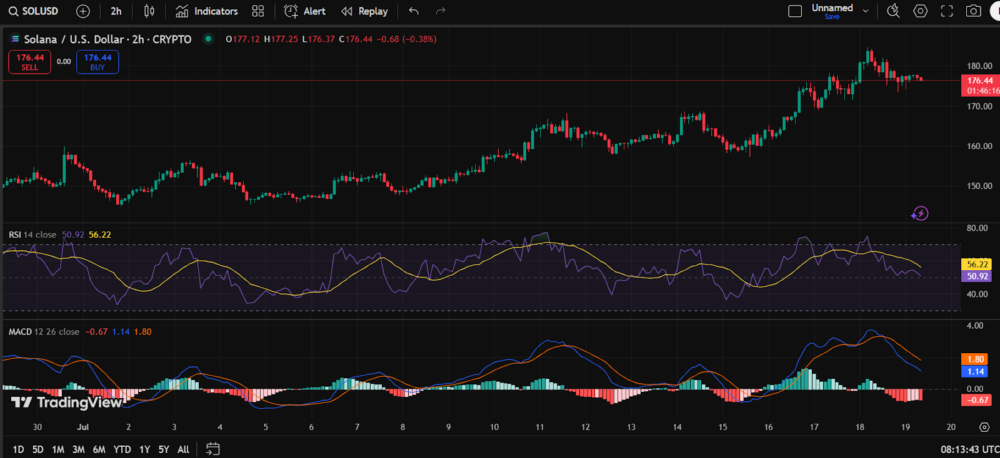

🎯 Cél: Hosszú távú befektetés (1–5 év) BTC, ETH, SOL és XRP esetében
💰 Stratégia: Havi rendszerességgel vásárolok (DCA), de nem automatikusan – szeretném optimalizálni az időzítést
📉 Elkerülendő: Vásárlás ATH közelében, túlfűtött piacon, extrém napi emelkedés után
📈 Előnyben részesítem: Visszahúzódás utáni stabilizált árakat, alacsony volatilitást, félelem időszakát
📆 Rugalmasság: Nem ragaszkodom fix naphoz (pl. elseje), hajlandó vagy pár napot várni a jobb belépésért
🧮 Döntésalap: Számokon és ciklusokon alapuló sablon (PivotFind Light), amely pontozásos rendszerrel értékel (0–10).
🪙 Érdeklődési kör: BTC, ETH, SOL és XRP mozgását figyelem, hasonló szemlélettel
⏳ Időtáv: A vásárlási döntés az elmúlt 2–3 hét piaci mozgásai alapján történik
📅 Aktuális cél: A mai napon szeretnék vásárolni, ha az időzítés megfelelő
Használd a Jsmith Kripto Vásárlási Profil.
Ld lenti diagram: indikatorok: MACD, ATR
Erdemes e ma SOL-t vasarolnom?
